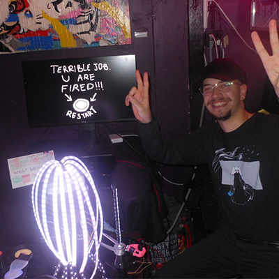
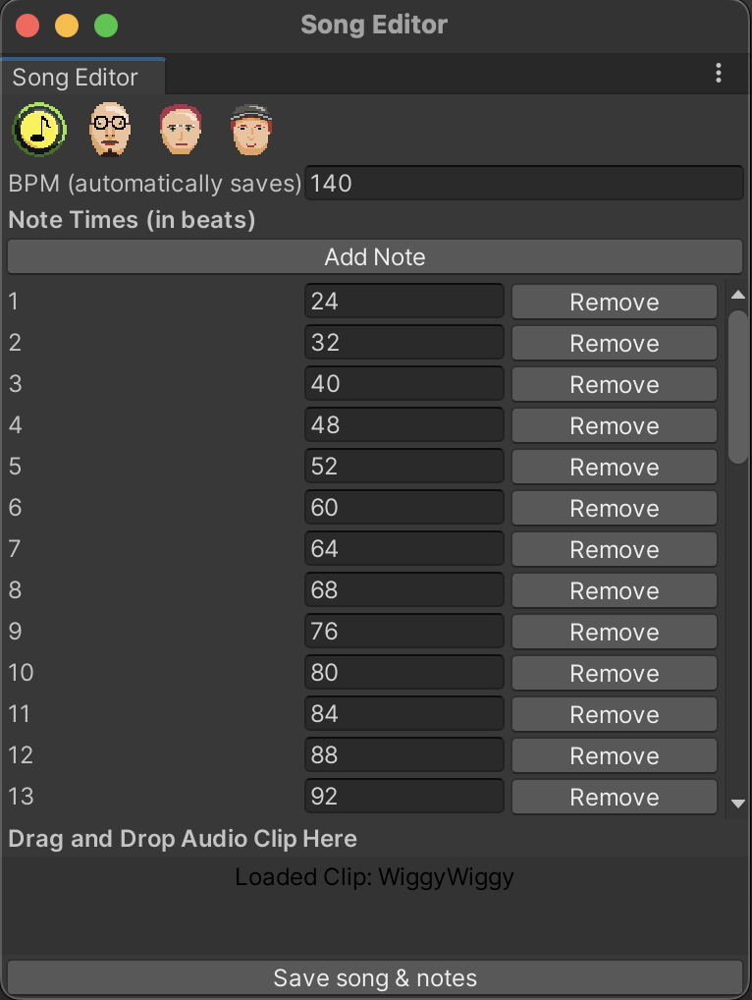

vec2 pos; uniform float time; uniform vec2 resolution; void main(void) { vec2 pos = 2.0*gl_FragCoord.xy / resolution.y - vec2(resolution.x/resolution.y, 1.0); vec3 col = 0.5 + 0.5*cos(time+pos.xyx+vec3(0.,2.,4.)); gl_FragColor = vec4(col,1.0); }
<- backWiggy Wiggy @ Wonderville
Installation
Terry Kahn, Julia Daser, and I showcased our physical-controller-based, haircutting game at Wonderville.
Project
Wiggy Wiggy was a game made for an alternative controller class. our group of three worked on a hairdressing rhythm game that put the player in the shoes of a hairdresser in a chaotic wig factory where wigs must be cut and dyed in rhythm to music!
This project was an incredible exercise in physical computing and C# / Unity programming. I was particularly put in charge of the Unity development of the project, where I created a set of custom unity editor tools to facilitate our processes. It was quite interesting to create a custom input window to scriptable object pipeline that allowed us to edit songs and keep them in rhythm easily. Below is a screenshot of the tool I created for us to use:
